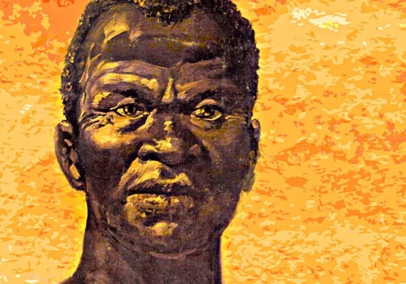

COMO FOI CRIADO O DIA DA CONSCIÊNCIA NEGRA?
O dia 20 de novembro faz referência a morte do Zumbi dos Palmares, uma personalidade importante para a luta dos negros contra a escravidão e o racismo na história do Brasil. Em 10 de novembro de 2011 foi decidido por lei então que dia 20 de novembro seria reconhecido como dia da consciência negra. Como forma de homenagear Zumbi dos Palmares e de ter uma que represente a luta do povo afro-descendente brasileiro.

QUAL A IMPORTÂNCIA DO DIA 20 DE NOVEMRBO?
Não só o dia 20 de novembro, mas, todo o mês de novembro é usado para falar sobre a luta do povo negro e de sua história. É importante reafirmar o quanto o povo negro sofreu e sofre no Brasil, o racismo ainda é muito comum e por isso devemos refletit sobre para que possamos mudar essa situação. Os negros e todas raças e etnias devem e merecem ser respeitadas e isso devia ser ensinado com mais frequência nas escolas para que as crianças aprendam desde sempre a respeitar a diversidade.